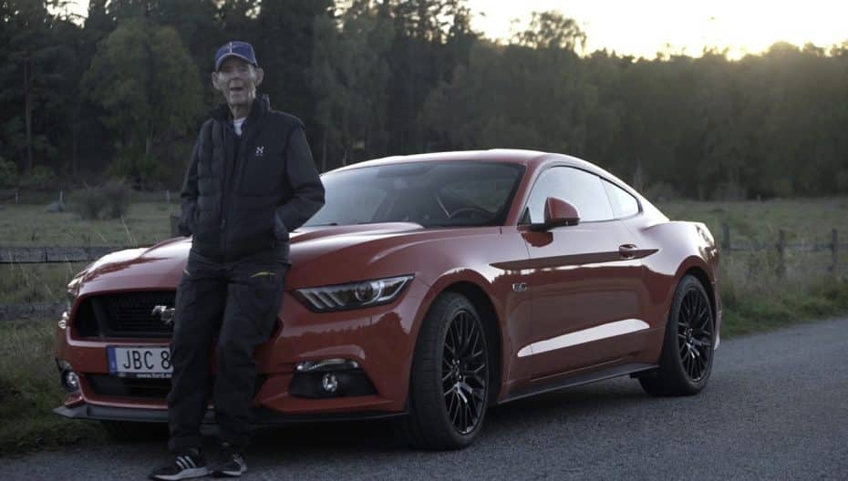

En mi tiempo libre, disfruto de una variedad de pasatiempos que me permiten relajarme y divertirme. Uno de mis pasatiempos favoritos es pasar tiempo con mi novia. Nos gusta salir juntos a pasear por el parque, tener cenas acogedoras en restaurantes o simplemente relajarnos viendo películas en casa. Compartir momentos especiales con ella es algo que realmente valoro y me hace sentir emocionalmente conectado.
Otro pasatiempo que me entretiene mucho es jugar videojuegos. Ya sea que esté explorando mundos fantásticos, compitiendo en emocionantes carreras de autos virtuales o participando en desafiantes batallas, los videojuegos me brindan una forma divertida de sumergirme en diferentes experiencias y desafíos. Además, también disfruto de la comunidad en línea que rodea a los videojuegos, donde puedo interactuar con otros jugadores y compartir estrategias y consejos.
Además, soy un entusiasta de la conducción de autos. Me encanta la sensación de estar al volante, sintiendo la potencia del motor y la libertad que viene con recorrer diferentes lugares. Ya sea que esté conduciendo por carreteras panorámicas en el campo o explorando la ciudad, encuentro que la conducción es una forma emocionante de relajarme y despejar mi mente.
